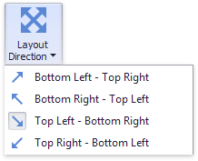

Layout
This topic describes how to change a layout algorithm used to arrange Treemap tiles. To do this in the Designer, use buttons from the Layout group placed in the Design ribbon tab.

The following algorithms are available.
| Algorithm | Example | Description |
|---|---|---|
| Slice and Dice |  |
This layout algorithm divides the space between items, slicing it in the specified direction depending on item value. |
| Squarified |  |
The Squarified algorithm arranges tiles so that their width/height ratio will be closer to 1. |
| Striped |  |
This algorithm is a modified version of the Squarified algorithm. The difference here is that tiles are drawn side by side as columns or rows. |
You can also set a layout direction to specify an arrangement of tiles depending on their sizes. To do this, click the Layout Direction button and select the required direction.

- Bottom Left - Top Right - Arrange tiles from the bottom-left to the top-right corner.
- Bottom Right - Top Left - Arrange tiles from the bottom-right to the top-left corner.
- Top Left - Bottom Right - Arrange tiles from the top-left to the bottom-right corner.
- Top Right - Bottom Left - Arrange tiles from the top-right to the bottom-left corner.